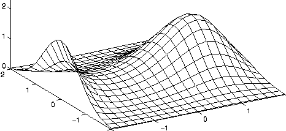
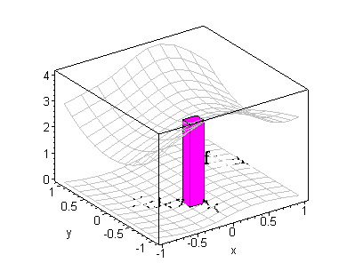

Topology
This is a learning
resource page for Topology, for undergraduates.
It is independent of any particular module or programme.
The material here may thus be of use to any 3rd year Mathematics
(or other) student
studying Topology (but do check your syllabus).
See for example the Leeds Uni module MATH3225
HERE .
Study Notes
-
Here
(note this draft version very provisional and incomplete!).
Official Version
TO FOLLOW! (pdf format)
Versions: As readers find typos (!), I upload
new versions. So you can quickly tell when a
new version appears, I am using version numbers:
The first release was v0.1. The above release is v0.3.3 (7/10/20).
Next is v0.3.4 (10/1/21) here.
- A nice complementary
set of lecture notes on
General Topology by Tom Leinster (Edinburgh).
- A nice set of lecture notes for a related (but more
specialised) topic can be found
here
(Alexander Kupers' Harvard course on diffeomorphism groups).
-
Another wonderful set of lecture notes
(including exercises), prepared by my former colleague
can be downloaded from
TO FOLLOW!
Exercises
Some
excercises are integrated in the notes.
(Students of MATH3225 should go to... Minerva!)

Some useful textbooks
- E Moise, Geometric topology in dimensions 2 and 3 (Springer)
- M A Armstrong, Basic Topology (McGraw-Hill)
- B Mendelson, Introduction to Topology (Blackie)
-
G Stephenson, Mathematical Methods for Science Students, Longman Publishers.
(Contains numerous good exercises.)
- M R Spiegel, Advanced Calculus (Schaum), McGraw Hill Publishers.

Past examination papers
2020 sample Exam -
2020 indicative solutions
Paul Martin (base=amsta)
Last Modified: Oct 2007